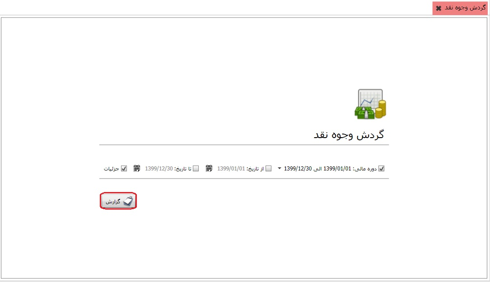

گزارش گردش وجوه نقد یکی از گزارش های حایز اهمیت در حسابداری می باشد، در این گزارش شما می توانید هر گونه گردشی که در موجودی وجوه نقد شما تاثیر می گذارد را ببینید، البته پیش از آن باید در سیستم مالی و حسابداری نمای مربوط به گردش وجوه نقد را تعریف کرده باشید، و پس از آن در قسمت صفحه ی تنظیمات خزانه داری در تب تنظیمات چاپ نمای گردش وجوه نقد را انتخاب کرده باشید.پس از آن مطابق شکل زیر با کلیک بر روی کلید گزارش، گردش وجوه نقد را دریافت خواهید کرد:
